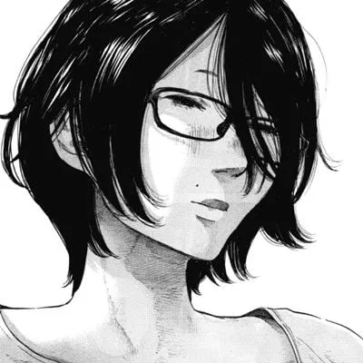
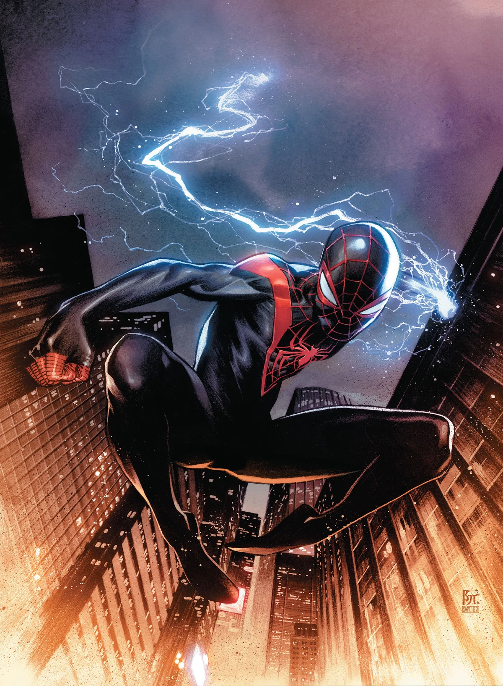

Curiosidades sobre mim
Oi, meu nome é Victor (mais conhecido como Toru)
Nasci 22/08/2008
Atualmente eu estudo na Escola Estadual São José. Estou no segundo ano do ensino médio e fazendo curso de informática.
Nasci em Passos, Minas Gerais, na Santa Casa às 21:17
Jogo vôlei desde o começo de 2023 e estou treinando para melhorar minhas habilidades e, quem sabe, participar de mais campeonatos na minha cidade ou até fora.
Tenho 1,73m de altura e peso 62kg
O que eu mais amo na minha vida é minha família, amigos e namorada. Adoro sair e me divertir com eles.
Infelizmente sou muito viciado em Neosoro.
Quero fazer faculdade de Educação Física ou alguma área da tecnologia/programação.
Algumas habilidades pessoais
- HTML (aprendendo ainda)
- Lógica de programação
- C++
- Faço academia
- Jogo vôlei (sub-17)
Meus personagens fictícios favoritos
Cisco Ramón
Nanjou Sachi
Aki Hayakawa

Miles Morales
Yuji Nishida